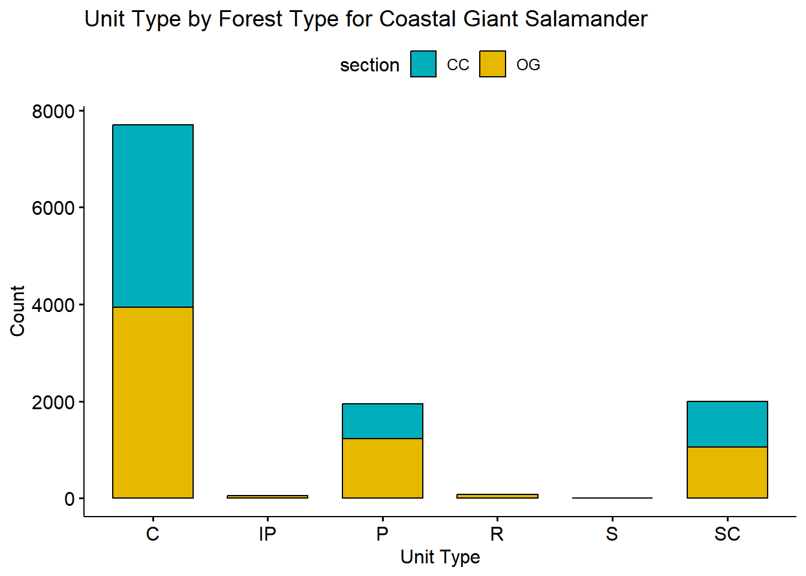
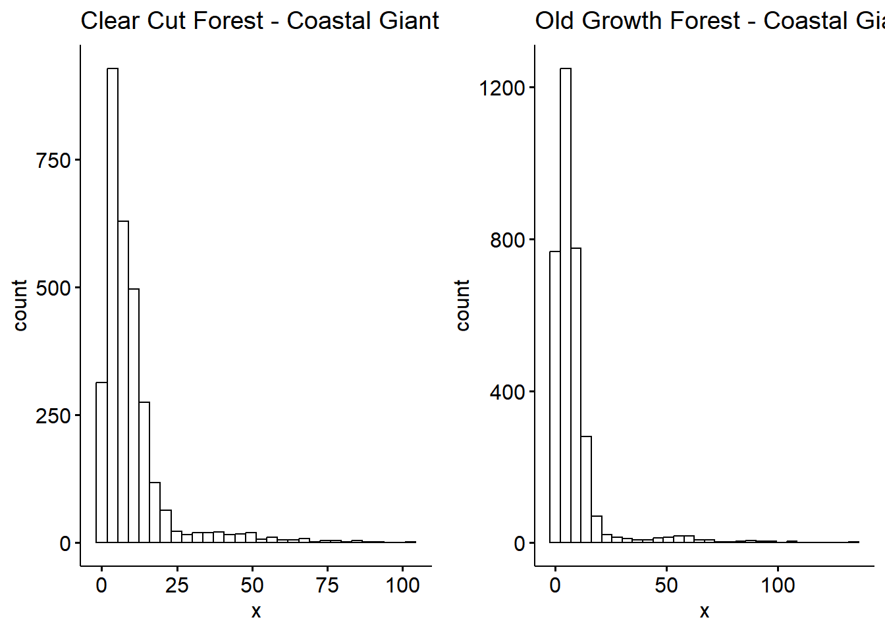
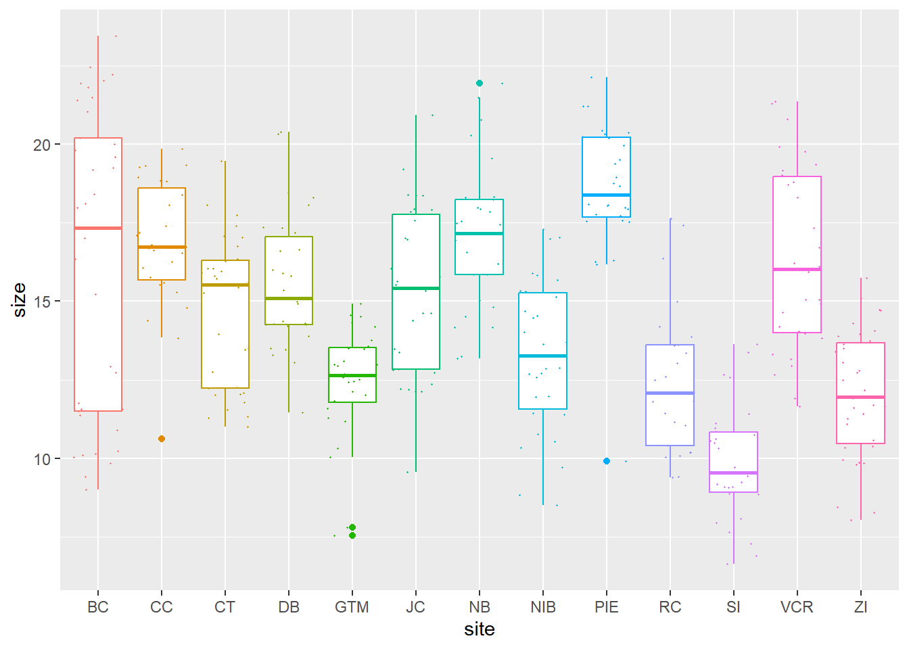
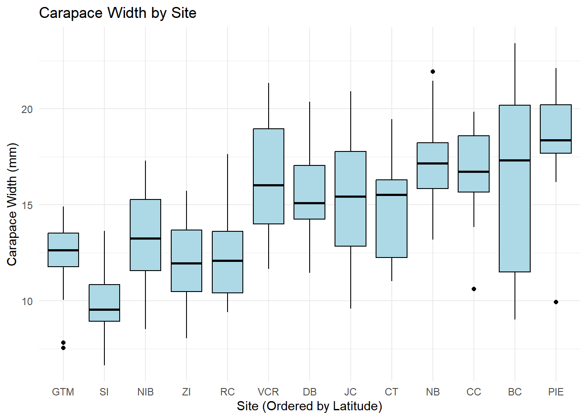
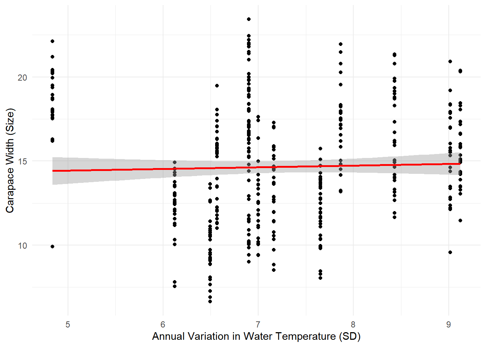

# Visualizesally_clean |>count(unittype, section) |># Calculate counts of unittype by sectionggbarplot(x ='unittype', y ='n', fill ='section', palette =c("#00AFBB", "#E7B800"), add ="mean_se") +labs(title ="Unit Type by Forest Type for Coastal Giant Salamander", y ="Count", x ="Unit Type")
Warning in stats::qt(ci/2 + 0.5, data_sum$length - 1): NaNs produced
Warning in stats::qt(ci/2 + 0.5, data_sum$length - 1): NaNs produced
Warning in stats::qt(ci/2 + 0.5, data_sum$length - 1): NaNs produced
Warning in stats::qt(ci/2 + 0.5, data_sum$length - 1): NaNs produced
Warning in stats::qt(ci/2 + 0.5, data_sum$length - 1): NaNs produced
Warning in stats::qt(ci/2 + 0.5, data_sum$length - 1): NaNs produced
Warning in stats::qt(ci/2 + 0.5, data_sum$length - 1): NaNs produced
Warning in stats::qt(ci/2 + 0.5, data_sum$length - 1): NaNs produced
Warning in stats::qt(ci/2 + 0.5, data_sum$length - 1): NaNs produced

# Clean sally_clean <- and_vertebrates |>filter(species =="Coastal giant salamander") |>drop_na(weight_g)# Separate the data cc_weight <- sally_clean |>filter(section =="CC") |>pull(weight_g)og_weight <- sally_clean |>filter(section =="OG") |>pull(weight_g)shapiro.test(cc_weight) # Normality for Clear Cut
Shapiro-Wilk normality test
data: cc_weight
W = 0.64219, p-value < 2.2e-16
shapiro.test(og_weight) # Normality for Old Growth
Shapiro-Wilk normality test
data: og_weight
W = 0.49182, p-value < 2.2e-16
leveneTest(weight_g ~ section, data = sally_clean)
Warning in leveneTest.default(y = y, group = group, ...): group coerced to
factor.
Levene's Test for Homogeneity of Variance (center = median)
Df F value Pr(>F)
group 1 5.7342 0.01667 *
6336
---
Signif. codes: 0 '***' 0.001 '**' 0.01 '*' 0.05 '.' 0.1 ' ' 1
t_test_result <-t.test(cc_weight, og_weight, var.equal =TRUE)# Report the t-test resultt_test_result
Two Sample t-test
data: cc_weight and og_weight
t = 4.905, df = 6336, p-value = 9.575e-07
alternative hypothesis: true difference in means is not equal to 0
95 percent confidence interval:
0.8953886 2.0875473
sample estimates:
mean of x mean of y
9.810634 8.319166
# Visualize the weight data for both Clear Cut and Old Growth sectionsggarrange(gghistogram(cc_weight, title ="Clear Cut Forest - Coastal Giant Salamander Weight"),gghistogram(og_weight, title ="Old Growth Forest - Coastal Giant Salamander Weight"))
Warning: Using `bins = 30` by default. Pick better value with the argument
`bins`.
Warning: Using `bins = 30` by default. Pick better value with the argument
`bins`.

# Filter for Cutthroat trout and remove missing values for length_2_mm and weight_gtrout_clean <- and_vertebrates %>%filter(species =="Cutthroat trout") %>%drop_na(length_2_mm, weight_g)shapiro.test(trout_clean$length_2_mm)
Shapiro-Wilk normality test
data: trout_clean$length_2_mm
W = 0.94911, p-value < 2.2e-16
shapiro.test(trout_clean$weight_g)
Shapiro-Wilk normality test
data: trout_clean$weight_g
W = 0.81039, p-value < 2.2e-16
Warning in cor.test.default(trout_clean$length_2_mm, trout_clean$weight_g, :
Cannot compute exact p-value with ties
Spearman's rank correlation rho
data: trout_clean$length_2_mm and trout_clean$weight_g
S = 747808, p-value < 2.2e-16
alternative hypothesis: true rho is not equal to 0
sample estimates:
rho
0.9960795
ggscatter(trout_clean, x ="length_2_mm", y ="weight_g", color ="species", add ="reg.line", conf.int =TRUE, palette ="jco") +labs(title ="Correlation between Body Length and Weight for Cutthroat Trout", x ="Body Length (mm)", y ="Body Weight (g)")
date latitude site size
Min. :2016-07-24 Min. :30.00 Length:392 Min. : 6.64
1st Qu.:2016-07-28 1st Qu.:34.00 Class :character 1st Qu.:12.02
Median :2016-08-01 Median :39.10 Mode :character Median :14.44
Mean :2016-08-02 Mean :37.69 Mean :14.66
3rd Qu.:2016-08-09 3rd Qu.:41.60 3rd Qu.:17.34
Max. :2016-08-13 Max. :42.70 Max. :23.43
air_temp air_temp_sd water_temp water_temp_sd
Min. :10.29 Min. :6.391 Min. :13.98 Min. :4.838
1st Qu.:12.05 1st Qu.:8.110 1st Qu.:14.33 1st Qu.:6.567
Median :13.93 Median :8.410 Median :17.50 Median :6.998
Mean :15.20 Mean :8.654 Mean :17.65 Mean :7.252
3rd Qu.:18.63 3rd Qu.:9.483 3rd Qu.:20.54 3rd Qu.:7.865
Max. :21.79 Max. :9.965 Max. :24.50 Max. :9.121
name
Length:392
Class :character
Mode :character
# Sample size per sitecount(pie_crab, site)
# A tibble: 13 × 2
site n
<chr> <int>
1 BC 37
2 CC 27
3 CT 33
4 DB 30
5 GTM 28
6 JC 30
7 NB 29
8 NIB 30
9 PIE 28
10 RC 25
11 SI 30
12 VCR 30
13 ZI 35
# Visualizing crab size distribution per siteggplot(pie_crab, aes(x = site, y = size, col = site)) +geom_boxplot() +geom_jitter(size =0.25) +theme(legend.position ="none")

# Check normality using Shapiro-Wilk testnorms <- pie_crab |>nest(data =-site) |>mutate(Shapiro =map(data, ~shapiro.test(.x$size)),n =map_dbl(data, nrow),glance_shapiro =map(Shapiro, broom::glance)) |>unnest(glance_shapiro)flextable::flextable(dplyr::select(norms, site, n, statistic, p.value)) |> flextable::set_caption("Shapiro-Wilk normality test for size at each site")
site
n
statistic
p.value
GTM
28
0.9007814
0.0119337484
SI
30
0.9705352
0.5539208550
NIB
30
0.9728297
0.6191340731
ZI
35
0.9744583
0.5765589900
RC
25
0.9315062
0.0941588802
VCR
30
0.9444682
0.1200262239
DB
30
0.9576271
0.2690631942
JC
30
0.9634754
0.3788327942
CT
33
0.9277365
0.0301785639
NB
29
0.9675367
0.4949587443
CC
27
0.9354659
0.0941803007
BC
37
0.8885721
0.0014402753
PIE
28
0.8489399
0.0008899392
# Run ANOVAres_aov <-aov(size ~ site, data = pie_crab)summary(res_aov)
Df Sum Sq Mean Sq F value Pr(>F)
site 12 2172 181.03 26.12 <2e-16 ***
Residuals 379 2626 6.93
---
Signif. codes: 0 '***' 0.001 '**' 0.01 '*' 0.05 '.' 0.1 ' ' 1
One-way analysis of means (not assuming equal variances)
data: size and site
F = 39.108, num df = 12.00, denom df = 145.79, p-value < 2.2e-16
# Subset data for selected sitespie_sites <- pie_crab |>filter(site %in%c("GTM", "DB", "PIE"))# Check for equal variance in subsetleveneTest(size ~ site, data = pie_sites)
Warning in leveneTest.default(y = y, group = group, ...): group coerced to
factor.
Levene's Test for Homogeneity of Variance (center = median)
Df F value Pr(>F)
group 2 0.548 0.5802
83
# Run ANOVA for subsetpie_anova <-aov(size ~ site, data = pie_sites)summary(pie_anova)
Df Sum Sq Mean Sq F value Pr(>F)
site 2 521.5 260.75 60.02 <2e-16 ***
Residuals 83 360.6 4.34
---
Signif. codes: 0 '***' 0.001 '**' 0.01 '*' 0.05 '.' 0.1 ' ' 1
# Tukey's HSD post-hoc testTukeyHSD(pie_anova)
Tukey multiple comparisons of means
95% family-wise confidence level
Fit: aov(formula = size ~ site, data = pie_sites)
$site
diff lwr upr p adj
GTM-DB -3.200786 -4.507850 -1.893722 3.0e-07
PIE-DB 2.899929 1.592865 4.206992 2.9e-06
PIE-GTM 6.100714 4.771306 7.430123 0.0e+00
# Linear regression: Testing Bergmann’s rulepie_lm <-lm(size ~ latitude, data = pie_crab)# View regression resultssummary(pie_lm)
Call:
lm(formula = size ~ latitude, data = pie_crab)
Residuals:
Min 1Q Median 3Q Max
-7.8376 -1.8797 0.1144 1.9484 6.9280
Coefficients:
Estimate Std. Error t value Pr(>|t|)
(Intercept) -3.62442 1.27405 -2.845 0.00468 **
latitude 0.48512 0.03359 14.441 < 2e-16 ***
---
Signif. codes: 0 '***' 0.001 '**' 0.01 '*' 0.05 '.' 0.1 ' ' 1
Residual standard error: 2.832 on 390 degrees of freedom
Multiple R-squared: 0.3484, Adjusted R-squared: 0.3467
F-statistic: 208.5 on 1 and 390 DF, p-value: < 2.2e-16
library(ggplot2)library(dplyr)# Ensure site is ordered by latitudepie_crab <- pie_crab %>%mutate(site =reorder(site, latitude))# Create the boxplotboxplot_figure <-ggplot(pie_crab, aes(x = site, y = size)) +geom_boxplot(fill ="lightblue", color ="black") +labs(x ="Site (Ordered by Latitude)",y ="Carapace Width (mm)",title ="Carapace Width by Site" ) +theme_minimal()# Save the plotggsave("img/crab_boxplot.png", boxplot_figure, width =6, height =4, dpi =300)# Display the plotprint(boxplot_figure)

#Report:Latitude was a significant predictor of carapace width (p < 0.001), while air temperature standard deviation (p = 0.173) and water temperature standard deviation (p = 0.325) were not significant.
model <-lm(size ~ water_temp_sd, data = pie_crab)summary(model)
Call:
lm(formula = size ~ water_temp_sd, data = pie_crab)
Residuals:
Min 1Q Median 3Q Max
-7.9428 -2.6948 -0.2145 2.6573 8.8070
Coefficients:
Estimate Std. Error t value Pr(>|t|)
(Intercept) 13.93728 1.15338 12.084 <2e-16 ***
water_temp_sd 0.09938 0.15716 0.632 0.528
---
Signif. codes: 0 '***' 0.001 '**' 0.01 '*' 0.05 '.' 0.1 ' ' 1
Residual standard error: 3.506 on 390 degrees of freedom
Multiple R-squared: 0.001024, Adjusted R-squared: -0.001537
F-statistic: 0.3999 on 1 and 390 DF, p-value: 0.5275
library(ggplot2)ggplot(pie_crab, aes(x = water_temp_sd, y = size)) +geom_point() +geom_smooth(method ="lm", col ="red") +labs(x ="Annual Variation in Water Temperature (SD)", y ="Carapace Width (Size)") +theme_minimal()
`geom_smooth()` using formula = 'y ~ x'

ggsave("carapace_width_vs_water_temp_sd.png")
Saving 7 x 5 in image
`geom_smooth()` using formula = 'y ~ x'
#Report:The plot shows the relationship between water temperature standard deviation (water_temp_sd) and carapace width, with data points scattered around the line of best fit. The regression reveals no large effect of water_temp_sd on carapace width, the p-value for the water_temp_sd coefficient is 0.528, showing no significant relationship.
# Select the predictor variablespredictors <- pie_crab[, c("latitude", "air_temp_sd", "water_temp_sd")]cor_matrix <-cor(predictors)# Display the correlation matrixcor_matrix
latitude air_temp_sd water_temp_sd
latitude 1.00000000 0.7932130 0.04188273
air_temp_sd 0.79321301 1.0000000 0.40970338
water_temp_sd 0.04188273 0.4097034 1.00000000
# Fit the multiple linear regression modelmodel_multiple <-lm(size ~ latitude + air_temp_sd + water_temp_sd, data = pie_crab)# Summarizesummary(model_multiple)
Call:
lm(formula = size ~ latitude + air_temp_sd + water_temp_sd, data = pie_crab)
Residuals:
Min 1Q Median 3Q Max
-7.7515 -1.8897 0.0506 1.9301 6.6746
Coefficients:
Estimate Std. Error t value Pr(>|t|)
(Intercept) -3.96880 1.54818 -2.564 0.0107 *
latitude 0.55940 0.06413 8.723 <2e-16 ***
air_temp_sd -0.41713 0.30559 -1.365 0.1730
water_temp_sd 0.15927 0.16174 0.985 0.3254
---
Signif. codes: 0 '***' 0.001 '**' 0.01 '*' 0.05 '.' 0.1 ' ' 1
Residual standard error: 2.832 on 388 degrees of freedom
Multiple R-squared: 0.3516, Adjusted R-squared: 0.3466
F-statistic: 70.13 on 3 and 388 DF, p-value: < 2.2e-16
#Report: Latitude significantly influences carapace width (p < 2e-16), while air temperature variability (p = 0.1730) and water temperature variability (p = 0.3254) do not significantly affect carapace width.